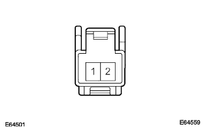

Telephone switch Assembly Single Inspection |
| 1. Telephone switch ASSY inspection |
|  |
Resistance inspection
Use a SST (Toyota Electrical Tester) to inspect the conductor between the connector terminals of the telephone switch Assy when operating the switch.
| Measurement conditions | Reference value |
|---|---|
| Without pressing the switch | Approximately 100kΩ |
| Pressing off hook switch | 0Ω |
| Pressing on -hook switch | Approximately 3kΩ |